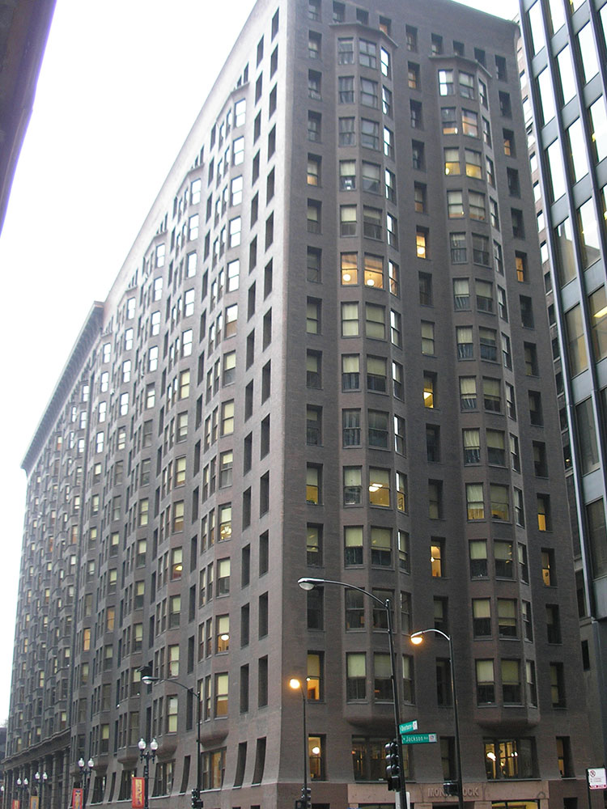
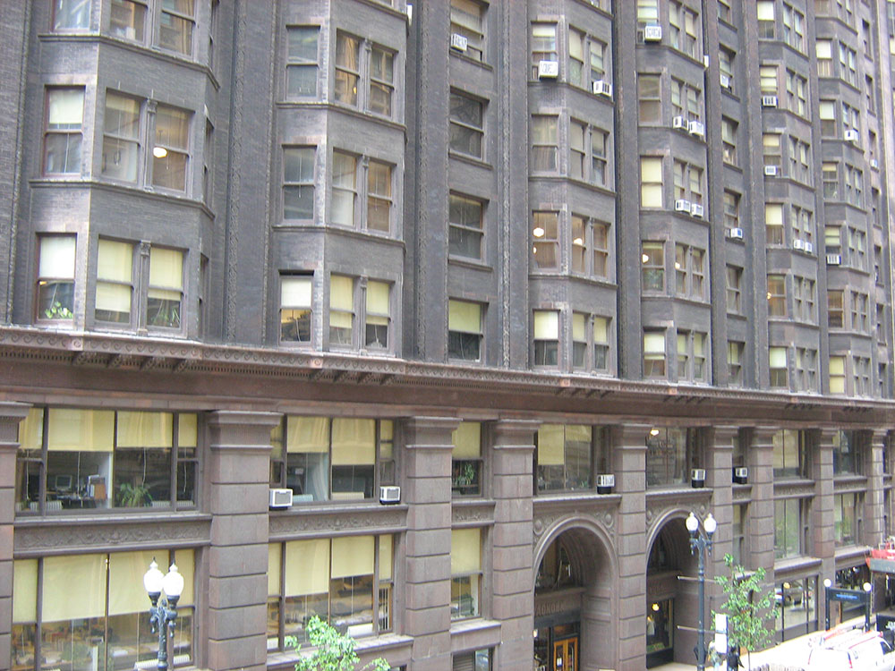
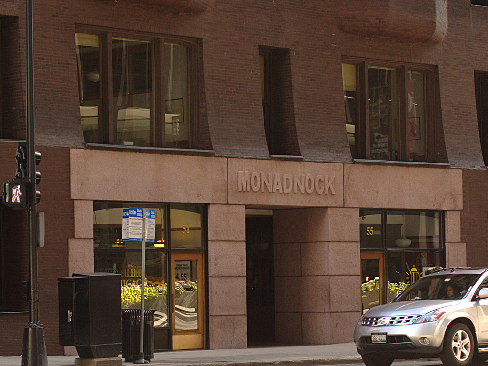

16-story skyscraper is the tallest load-bearing brick building ever constructed
General Information
Closed Saturday and Sunday
Public access to the lobby and retail spaces is generally available during business hours
Self-guided visits to the lobby and public areas: Free
Spring and Fall are ideal for architecture walks through the Loop
Summer is popular for self-guided and architecture tours
Winter provides comfortable indoor viewing of one of Chicago's most significant historic skyscrapers
How to Get There
From Downtown Chicago (1 mi): Head south through the Loop on Dearborn Street or State Street, continue to Jackson Boulevard, and arrive at the historic Monadnock Building at 53 W. Jackson Blvd., one of the world's tallest load-bearing brick buildings.
Overview
The Monadnock Building (historically the Monadnock Block) is a 16-story skyscraper located in the south Loop area of Chicago. The north half of the building was designed by the firm of Burnham & Root and built starting in 1891. The tallest load-bearing brick building ever constructed, it employed the first portal system of wind bracing in America. Its decorative staircases represent the first structural use of aluminum in building construction. The later south half, constructed in 1893, was designed by Holabird & Roche and is similar in color and profile to the original, but the design is more traditionally ornate. When completed, it was the largest office building in the world. The success of the building was the catalyst for an important new business center at the southern end of the Loop.
The building was remodeled in 1938 in one of the first major skyscraper renovations ever undertaken—a bid, in part, to revolutionize how building maintenance was done and halt the demolition of Chicago's aging skyscrapers. It was sold in 1979 to owners who restored the building to its original condition, in one of the most comprehensive skyscraper restorations attempted as of 1992. The project was recognized as one of the top restoration projects in the US by the National Trust for Historic Preservation in 1987. The building is divided into offices from 250 square feet (23 m2) to 6,000 square feet (560 m2) in size, and primarily serves independent professional firms. It was listed for sale in 2007.
The north half is an unornamented vertical mass of purple-brown brick, flaring gently out at the base and top, with vertically continuous bay windows projecting out. The south half is vertically divided by brickwork at the base and rises to a large copper cornice at the roof. Projecting window bays in both halves allow large exposures of glass, giving the building an open appearance despite its mass. The Monadnock is part of the Printing House Row District, which also includes the Fisher Building, the Manhattan Building, and the Old Colony Building.
When it was built, many critics called the building too extreme, and lacking in style. Others found in its lack of ornamentation the natural extension of its commercial purpose and an expression of modern business life. Early 20th-century European architects found inspiration in its attention to purpose and functional expression. It was one of the first buildings named a Chicago Architectural Landmark in 1958. It was added to the National Register of Historic Places in 1970, and named as part of the National Historic Landmark South Dearborn Street - Printing House Row North Historic District in 1976. Modern critics have called it a "classic", a "triumph of unified design", and "one of the most exciting aesthetic experiences America's commercial architecture produced".
Together, the two parts of the building have a frontage of 420 feet (130 m) on Dearborn Street with a depth of 70 feet (21 m). The original northern half presents a plain, unbroken vertical mass of purple-brown brick, which is contoured to create a gentle curve at the base of the building and an outward flare to form an austere parapet at the top. The corners of the building are gracefully chamfered as they rise to the top and the oriel windows are chamfered at their base. The floor divisions are not marked on the exterior; the unbroken edifice is interrupted only by a series of cantilevered window bays, separated by rows of single thin silled windows set into the vertical face. The entryways are small, single-height portals topped with plain stone lintels.
The south half preserves the lines and color of the older building, but is vertically divided by a stringcourse over the second story, emphasizing the building's base, and a large ornamental copper cornice at the roof line. Massive blocks of red granite, 6 feet (1.8 m) thick, frame the large, two-story entrances. The projecting window bays of the original are repeated, but alternate in a pattern of two four-window bays to one recessed strip of windows to create the undulating appearance of the facade that was an early trademark of Holabird & Roche.
The Monadnock rests on the floating foundation system invented by Root for the Montauk Building that revolutionized the way tall buildings were built on Chicago's spongy soil. A 2-foot (0.61 m) layer of concrete, reinforced with steel beams, forms a spread footing extending out 11 feet (3.4 m) under the surrounding streets, spreading the weight of the building over a large area of earth. The building was designed to settle 8 inches (200 mm), but by 1905 had settled that much and "several inches more", necessitating reconstruction of the first floor. By 1948, it had settled 20 inches (51 cm), resulting in a step down from the street to the ground floor. The entire east wall is supported on caissons sunk to the hardpan, installed when the subway Blue Line was dug under Dearborn Street in 1940.
The narrow building allows an external exposure to all of the 300 offices, which pass natural light via double hung outside windows through feather-chipped glass transoms and hallway partitions into the single central corridor. Skylights bring sunlight into the open stairwells. The north half corridors are 20 feet (6.1 m) wide and the south half corridors are 11 feet 6 inches (3.51 m). In the north half, there are two open stairs in the center at the one third points, with perforated risers, white marble treads, and decorative steel railings. There are two banks of four elevators on the west side of the corridor, one for passengers and the other for freight. In the south half, there is a single bank of elevators on the north half of the length. The southern bank was abandoned and slabbed over on each floor. There is a flight of stairs behind each of these shafts with marble treads, closed cast iron risers, and ornamental balusters. The basic office suite is 600 square feet (56 m2), consisting of one outer office and two or more inner offices. Heavy internal walls at the quarter and halfway points, the arches of which manifest Root's innovative wind bracing, mark the boundaries of the four original buildings.
The Monadnock belongs to the Printing House Row District, a National Historic Landmark which includes the Manhattan Building, the Old Colony Building, and the Fisher Building, some of Chicago's seminal early skyscrapers. The Manhattan Building, built by William LeBaron Jenney in 1890, was the first building in Chicago with a complete steel skeleton or "Chicago" construction, an innovation Jenney had introduced in the Home Insurance Building in 1884. The first 16-story building in America, at the time it was "regarded with awe and fear". Jenney's masterpiece, the Manhattan was considered a technical triumph in construction. The 17-story Old Colony, built by Holabird & Roche in 1894, was considered one of the structural masterpieces of its time for its revolutionary portal form of bracing. It is the only survivor of a group of Chicago school buildings with rounded corner bays. The Fisher Building, built by Burnham in 1894, was an engineering miracle—the first tall commercial building to be built almost entirely without bricks. Its steel frame and thin terracotta curtain wall allowed two-thirds of the surface to be covered with glass.
The district overlaps geographically with the Printer's Row neighborhood, originally the center of Chicago's printing and publishing industry, but now mostly converted to residential housing. The area is also home to the largest public library in the world, the Harold Washington Library, named for Chicago's first African-American mayor, and the Loop campus of Depaul University, America's largest Roman Catholic university.
Immediately to the west on Jackson Street is the Union League Club of Chicago, founded in 1879 as a civic organization for "upright, law-abiding businessmen". To the north are the three buildings comprising Ludwig Mies Van der Rohe's minimalist Federal Plaza: the 1964 Everett McKinley Dirksen United States Courthouse, the only courthouse designed by Mies; the 1973 United States Post Office Loop Station; and the 1975 Kluczynski Federal Building, Mies's last project, considered to mark the apex of his career. The triangular, 27-story Metropolitan Correctional Center, a detention center serving the Federal courts in the Dirksen Building and nearby Ralph H. Metcalfe Federal Building, is southwest of the Monadnock at Clark and LaSalle.
The south leg of the Chicago Transit Authority elevated rail loop runs next to the building on Van Buren Street; the CTA's Brown, Orange, Pink, and Purple Lines are served by the Library-State/Van Buren stop one block to the east. The Jackson street subway station, serving the Blue Line, is on the Dearborn Street side of the building.
This article uses material from the Wikipedia article "Monadnock Building", which is released under the Creative Commons Attribution-Share-Alike License 3.0




